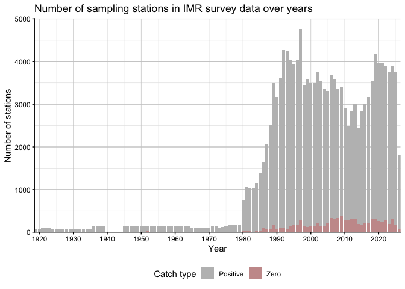

R Package for Downloading Server-Side Data for BioticExplorer
This package downloads and compiles the IMR Biotic survey database into a DuckDB database, providing programmatic access to all of the institute’s Biotic data from R. It serves as the data backend for the BioticExplorer Shiny application.
Installation
remotes::install_github("DeepWaterIMR/BioticExplorerServer")Usage
Download the IMR biotic database
The BioticExplorerServer package (BES) downloads and compiles the IMR Biotic database into a duckdb database. The download requires stable intranet access (VPN, cable within the institute web or HI-adm WiFi). The database requires more than 2 Gb of disk space. Make sure to modify the dbPath argument to choose an appropriate location for the database. Do not store it in a folder that is synced to the cloud due to its size, and be mindful of the institute’s data policy. While most of the data is licensed under NLOD (the governmental version of CCBY), some external data within the database must not be shared outside the institute. By using this package, you accept the responsibility of handling the IMR Biotic data according to the licenses and regulations. It is advisable to run the download command in a separate R session or in a screen session in the terminal on Unix machines, as downloading the database takes several hours and requires a stable internet connection. If the connection is unstable, the function may return an error. In such cases, ensure that the connection is stable and rerun the command. The function should continue downloading from where it left off.
library(BioticExplorerServer)
compileDatabase(dbPath = "~/IMR_biotic_BES_database") # default dbPath, written out to show itUpdate the database
Currently, the entire database must be re-downloaded to update it because IMR Biotic database does not have last modified tags. To update the database, you can do the following:
library(BioticExplorerServer)
compileDatabase(dbPath = "~/IMR_biotic_BES_database",
dbName = "bioticexplorer-next")
unlink(normalizePath("~/IMR_biotic_BES_database/bioticexplorer.duckdb"))
file.rename(
normalizePath("~/IMR_biotic_BES_database/bioticexplorer-next.duckdb"),
normalizePath("~/IMR_biotic_BES_database/bioticexplorer.duckdb",
mustWork = FALSE))This process first downloads the database to a file named bioticexplorer-next.duckdb, then deletes the old database and renames bioticexplorer-next.duckdb to bioticexplorer.duckdb. Since downloading takes time, you can continue using the database in another R session while the download is in progress. If it is not a priority, you can also overwrite the existing database:
compileDatabase(dbPath = "~/IMR_biotic_BES_database", overwrite = TRUE)Uninstall the database
If you want to remove the database from your computer, simply delete the folder at the specified dbPath. Remember to empty your trash bin as well.
Control the database through R
Once the database has been downloaded and saved to a duckdb database, you can use standard DBI or dplyr functions to access it:
# Packages required to replicate the example:
packages <- c("tidyverse", "data.table", "DBI", "duckdb")
# Install packages not yet installed
installed_packages <- packages %in% rownames(installed.packages())
if (any(installed_packages == FALSE)) {
install.packages(packages[!installed_packages])
}
# Load the packages
invisible(lapply(packages, library, character.only = TRUE, quietly = TRUE))
# Connect to the database (assuming you used standard dbPath and name)
con_db <- "~/IMR_biotic_BES_database/bioticexplorer.duckdb" %>%
normalizePath() %>%
duckdb::duckdb(read_only = TRUE) %>%
DBI::dbConnect()
## Create the data objects
stnall <- dplyr::tbl(con_db, "stnall") # station-based data
indall <- dplyr::tbl(con_db, "indall") # individual-based data
ageall <- dplyr::tbl(con_db, "ageall") # age data
mission <- dplyr::tbl(con_db, "mission") # information on
meta <- dplyr::tbl(con_db, "metadata") %>% # time of download
collect() %>% mutate_all(as.POSIXct)
csindex <- dplyr::tbl(con_db, "csindex") # cruise series index
gearlist <- dplyr::tbl(con_db, "gearindex") %>% collect() # gear index
taxalist <- dplyr::tbl(con_db, "taxaindex") %>% collect() # taxa indexThese data objects can now be used in R:
mission %>% head() %>% collect()## # A tibble: 6 x 14
## startyear platformname cruise missiontype platform missionnumber
## <int> <chr> <chr> <chr> <chr> <int>
## 1 1906 NVG-sampling (Norsk vårgy… <NA> 1 10016 1
## 2 1907 NVG-sampling (Norsk vårgy… <NA> 1 10016 1
## 3 1908 NVG-sampling (Norsk vårgy… <NA> 1 10016 1
## 4 1909 NVG-sampling (Norsk vårgy… <NA> 1 10016 1
## 5 1910 NVG-sampling (Norsk vårgy… <NA> 1 10016 1
## 6 1911 NVG-sampling (Norsk vårgy… <NA> 1 10016 1
## # i 8 more variables: missiontypename <chr>, callsignal <chr>,
## # missionstartdate <chr>, missionstopdate <chr>, purpose <chr>,
## # missionid <chr>, cruiseseriescode <chr>, idCruiseseriesSample <chr>The dplyr package can also be used with databases. The only difference from normal use is that you’ll need to collect() the data from the database after filtering. Note that you are handling large amounts of data, and using the collect function incorrectly may cause your computer to crash due to insufficient RAM. Therefore, always filter before collecting and consider using compute() or use the data.table package, if you’ll need to handle very large proportions of the IMR Biotic database. Stations with no catch (i.e., where commonname is NA) can be now found by stnall |> filter(!is.na(commonname)) (Figure 1).
stnall %>%
filter(!is.na(cruise)) %>%
collect() %>%
group_by(startyear) %>%
reframe(
n = length(unique(paste(cruise, platformname, serialnumber))),
zero_catch = length(unique(paste(cruise, platformname, serialnumber)[is.na(
commonname
)]))
) %>%
mutate(n = n - zero_catch) %>%
rename(Positive = n, Zero = zero_catch) %>%
pivot_longer(cols = c(Positive, Zero), names_to = "type", values_to = "n") %>%
ggplot() +
geom_col(aes(x = startyear, y = n, fill = type)) +
scale_fill_manual(values = c("Positive" = "grey", "Zero" = "#C99A9A")) +
scale_x_continuous(breaks = seq(1910, 2020, by = 10), expand = c(0, 0)) +
scale_y_continuous(expand = expansion(mult = c(0, 0.05))) +
labs(
x = "Year",
y = "Number of stations",
title = "Number of sampling stations in IMR survey data over years",
fill = "Catch type"
) +
theme_classic() +
theme(
legend.position = "bottom",
panel.grid.major.y = element_line(color = "grey80", linewidth = 0.5),
panel.grid.minor.y = element_line(color = "grey90", linewidth = 0.25),
panel.grid.major.x = element_line(color = "grey80", linewidth = 0.25),
panel.grid.minor.x = element_line(color = "grey90", linewidth = 0.1)
)
Figure 1. Number of IMR Biotic sampling stations per year from around 1914 to present. Zero catch stations (is.na(commonname)) are shown in red, while stations with positive catches are shown in grey.
The duckdb database contains following data tables:
DBI::dbListTables(con_db)Explore the database using Biotic Explorer shiny app
Once downloaded, you can also use the database through the Biotic Explorer shiny app.
Troubleshooting
If you get an error something like:
Error: ! error in evaluating the argument ‘drv’ in selecting a method for function ‘dbConnect’: rapi_startup: Failed to open database: {“exception_type”:“IO”,“exception_message”:“Could not set lock on file …
You likely have database connection with write privileges open elsewhere within your R session. DuckDB supports only one write connection, but multiple simultaneus read only connections can be established. Close the connections to the database:
DBI::dbDisconnect(con_db)and connect to the database in read only mode: duckdb::duckdb(read_only = TRUE).